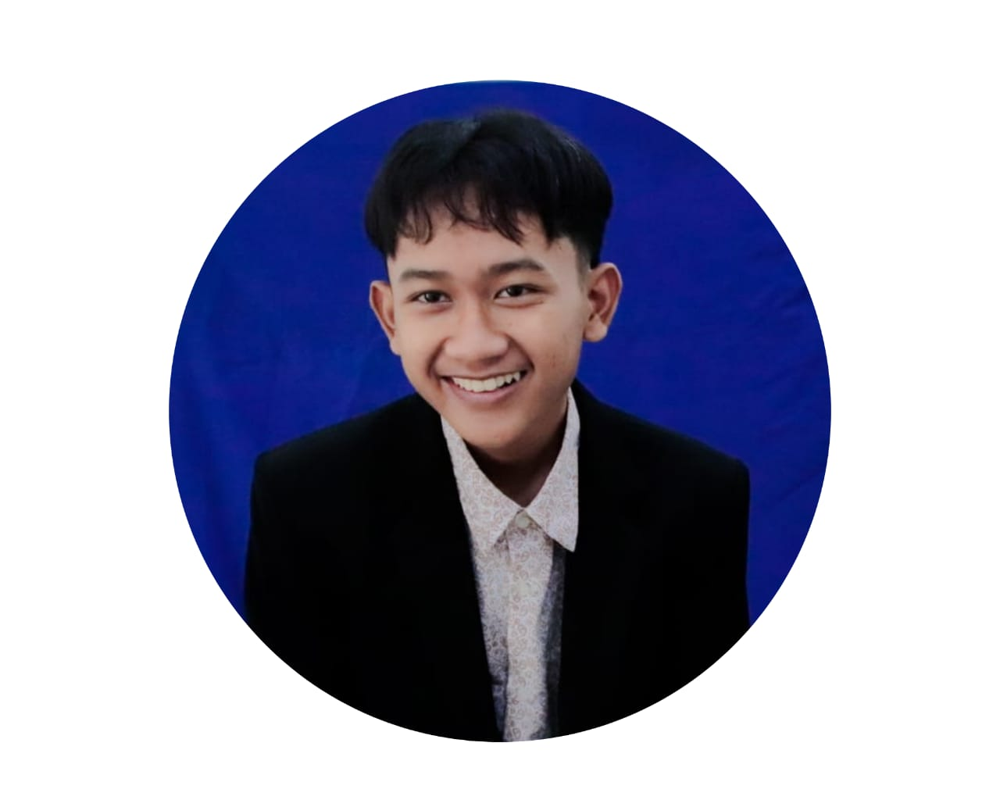

Ahmad Hamizan
+62 85797327869 | ahmadhamiijan@gmail.com
Tentang Saya
Saya Ahmad Hamizan, adalah lulusan baru yang penuh semangat dan siap untuk membawa energi positif ke dunia profesional. Dengan latar belakang pendidikan dalam per editan,saya telah mendapatkan pemahaman yang cukup tentang ilmu editorial dan keterampilan praktis yang diperlukan untuk berkembang di dunia kerja.
Pendidikan
2021 - 2024 | SMA IT Al Burhany | MIPA
Pada saat SMA,saya mengikuti ekstrakulikuler fotografi dikarenakan saya tertarik untuk masuk ke dunia fotografi dan editing.Saya menjadi anggota OSIS dalam bidang Dokumentasi dan informasi.
2019 - 2024 | Pondok Pesantren Assalafiyyah
Pada tahun 2023,saya diberi kesempatan menjadi anggota dari tim dokumentasi di pesantren untuk acara-acara yang akan diadakan di pesantren.
Pengalaman kerja
Asisten Tim Dokumentasi di Pesantren dan Sekolah
[TA 2023 - 2024]
Membantu Mendokumentasikan di acara-acara besar pesantren.
Soft Skill
Edit Foto dan Video Ringan | Take Foto Menggunakan Kamera dan Handphone.